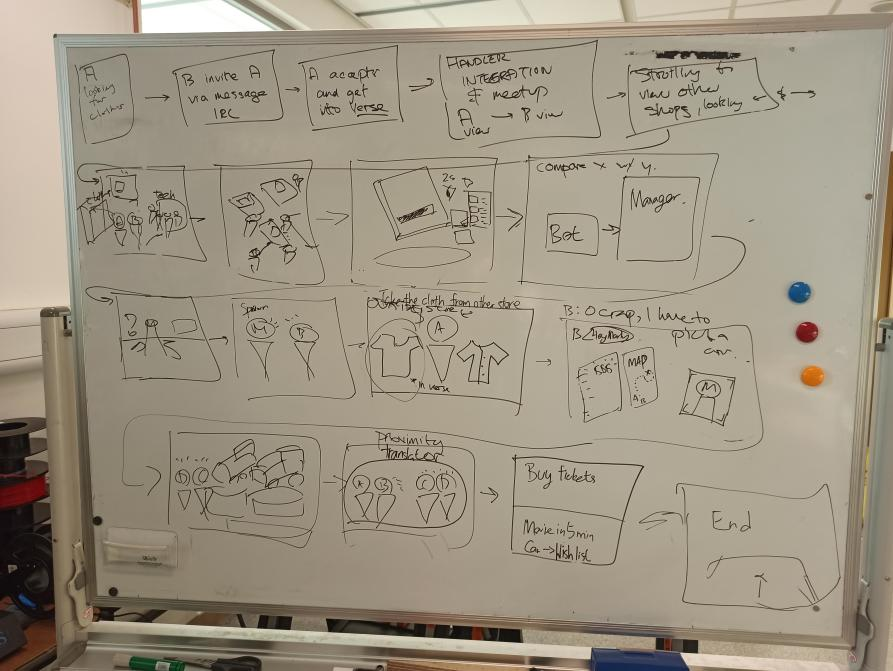

Project III
Social Virtual Reality (VR)

For our third and final group COMP 4461 Project in Darkness will Arise, we were tasked to develop our project surrounding the topic of Social Virtual Reality (VR). Out of the three potential topics, we picked "2. Designing Social VR experiences for some other future scenario".
We decided to build up our project on the idea of VR Shopping. Online Shopping has shown more dominance as a shopping choice over the years. Despite the massive convenience of being able to shop anywhere, it still has its own handful of inconveniences; the main issue with this mode of shopping is its lack of socialization; When shopping in physical stores, you could often go with your friends and family. But physical shopping has its own set of challenges and limitations for both customers (e.g. Getting Lost) and shopowners (e.g. Rent and Security).
Because of this, we decided to develop a VR Shopping Platform; Not just to utilize the strengths of physical (e.g. Traditional Charm of Physical Stores) and online stores (e.g. Remote Accessibility), but also to compensate for their respective weaknesses. On top of that, we decided to integrate our ideas from Project 1 and Project 2 into our Final Project. Our VR Shopping Platform and final project for Darkness will Arise is called VeRse.

What is VeRse?
VeRse is a 24/7 online VR Shopping Platform. With the non-existent limitations of space and physics in the VR world, users can experience the realistic yet boundless galleria of the VeRse. Not only can users shop for tangible goods of various sizes (e.g. Clothing, Automobiles, Planes), but they can also enjoy intangible services (e.g. Cinema, Karaoke, Arcades). To add, no matter where your friends and family are in the real world, they can always be of company while you stroll around with them online in the VeRse. The endless possibilities and exclusive features available in VeRse would make it an excellent choice when planning to shop or run a business.
Interpret
To further understand our target audience, we've brainstormed potential difficulties and issues they may face in shopping environment, be it physically or through online platforms.

Mindmap
Video Storyboard Plot
This is a whiteboard capture of our video's story rundown when first drafting the plot.

Prototype Video Demonstration
Here is a 5-min long Demonstration Video featuring the VeRse, team members from Darkness will Arise and MART-E Chan. (With a hint of Oscar-Award Worthy Film Directing)
Prototype Video Overview
The Prototype Video Demonstration attempts to demonstrate the potential functions and exclusive features available in the VeRse through somewhat humorous storytelling. The overall story follows the first person perspective of Aayush (Main Character) as a regular roamer in our VR platform. We made use of various programs and software to develop the whole video from scratch.
1. DaVinci Resolve (Primary Video Editing Platform)
2. Mozilla Hubs (Stage Setting) and Mozilla Spoke (Scene Creation)
3. Audacity (Audio Editing Software for Audio Extraction, Recording and Noise Reduction)
4. 3tene (Creation of MART-E avatar (a.k.a MART-E chan))
5. Adobe XD (Development of the User Interface (UI) Visuals)
6. Adobe Illustrator (Image Editing Software, used alongside with Adobe XD)
MART-E Avatar
Prototype Illustration
1. Handler Integration
Handler makes a play in the VeRse by accomodating the communication needs of the deaf and mute. This gives disadvantaged users a fair opportunity to enjoy the luxuries and experiences of Social VR shopping. Such users are required to wear VR Gloves so as to accurately track finger and hand movements, for Sign-Language to Speech conversion. Speech from other users in the VeRse is converted back to Sign-Language for communication.
Image Context: Endrave (Mute Friend) is using VR Gloves and Sign Language to Communicate [Top Left]. Aayush (Person in Endrave's View, Main Character) is speaking, and his speech is converted to Sign-Language for Endrave to understand [Handler Avatar on Bottom Right].
2. Virtual Reality Communication Environment
VeRse features a virtual social environment, where users can freely roam around in private or with their friends. Users can also communicate to strangers within this platform and even make new friends here. Users can also customize the looks of their avatar to their personal preferences.
Image Context: Aayush (Main Character) is interacting with Zachary (Stranger) and talking about the new Mango 12 Phone. Because of the self-customization feature, users of different avatar appearances can be seen.
3. Shopping User Interface and Helper Bot
Shopkeepers can display information about different items for sale, such as their specifications and promotions. This informtion will be shown to users upon inspecting the said items. The items themselves are 3D-modeled/3D-scanned and put into the virtual store for display. A Helper Bot is also available to give more product information and to answer general user enquiries.
Image Context: Aayush (Main Character) is inspecting the new Mango 12 Phone upclose, and product specifications and price deals are displayed during close inspections. A Helper Bot is providing additional information to Aayush during inspection.
4. Staff and Shopkeeper Notification System
When there are questions that even the Helper Bot cannot answer, users can request for human store representatives to answer questions (e.g. Store Staff, Manager). If representatives aren't in the virtual store, they will receive a prompt in the real world to enter the VeRse. Having no idle staff in virtual stores would greatly reduce operation costs for businesses.
Image Context: Aayush (Main Character) requests to see Benedict (Store Manager). Benedict then receives a notification prompt to enter the virtual store in real life.
5. VR Closet
Users can wear clothes in the VeRse by uploading a 3D-model of themselves and wearing clothes to see if they fit. They can also see if those clothes fit on other users if they have permission to view other user's models.
Image Context: Endrave (Mute Friend) asks Aayush (Main Character) on which jacket to buy, since he's indecisive. Aayush uses Endrave's user model to see which fits and looks better on him.
6. MART-E Chan
MART-E makes her debut in the VeRse as users' personal shopping companion. She can provide users with product comparisons from different shops, map layouts, teleportation service (if destination points are too far), remote purchasing service and shop bookmarks (to bookmark stores users like (User Personalization)). Also, her new human-like appearance and behaviour makes her more engaging and interactive towards users.
Image Context: Aayush (Main Character) asks MART-E Chan for price and rating comparisons for automobile stores. After selecting a store, MART-E Chan offers to teleport him to the store since it's so far.
Image Context: Aayush (Main Character) asks MART-E Chan to purchase tickets to Spiderman 3. Before teleporting him to the designated cinema to view the movie, she asks if he'd like to bookmark the car shop he's currently in.
7. Proximity Translator
When roaming around in the VeRse, users are bound to run into other users of different language backgrounds. In order to eliminate language barriers, a Proximity Translator system is integrated. This activates when users are near others, and this allows both the user and others to understand each other whilst speaking their own languages.
Image Context: Aayush (Main Character) is walking towards Wesley and Anson (Strangers) who are talking in different languages about the new Spiderman movie(i.e. Chinese and Japanese respectively). Once he gets close enough, the Proximity Translator activates and he can understand what they say and vice versa.
Contributions
My main contributions towards this project are as followed:
1. Main Editor and Co-Producer of the Demo Video
2. Main Scene Director and Plot/Script Co-Writer of Demo Video
3. Actor and Voice Actor of the Apple Store Manager of Demo Video
4. Slight Modifications to Hubs Scenes for Demo Video
5. Co-Creator of Mindmap
Reflection
This project showed me new profound perceptions on the applications of Virtual Reality (apart from just gaming purposes) in which could greatly benefit the society. I believe this project could be applied to real-world problems once the development of VR technology has furthered. I also found it incredible that we were able to effectively integrate our first two projects into our final project as exclusive features. (It's almost like we planned all this from the very start~)
I'm also really proud of the demo video as the video's Main Editor, and I'm glad that it effectively (and humorously) conveyed the intended purpose and potential of VeRse. Although the whole movie-making procedure was exhausting and that I wish I added subtitles to the video, I would still call it a success and a good-worth of my time. There is room for improvement (e.g. More Detailed UI, Use of More Realistic Avatars), but I've seriously touched up my critical thinking and software skills from this project.
Mozilla Hubs provided an immersive environment for group discussions and for video-shooting, but there are some serious limitations to Hubs (e.g. Limited Scene Size when Publishing, Dropping Frame Rates, Lack of Actual Programming to thoroughly customize Hubs). Despite all that, I've enjoyed my time being in Darkness will Arise. It's been a pleasure gents.